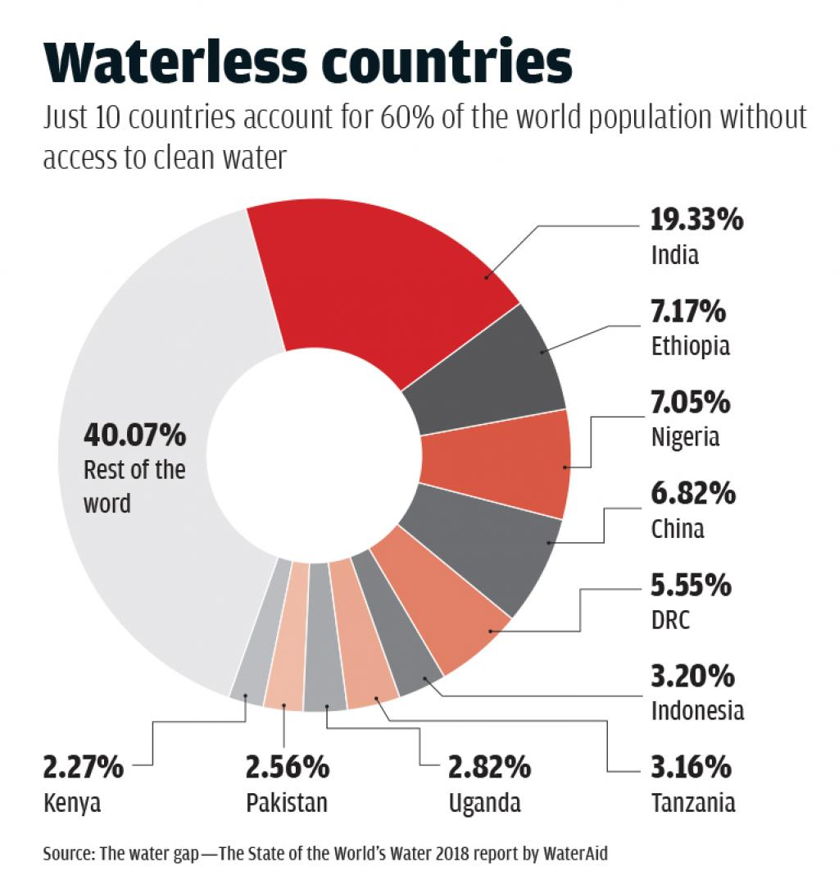

Water Availability
Check the water availability in your area:

Water Conservation Tips
- Turn off the faucet while brushing your teeth
- Fix leaks promptly
- Use a broom instead of a hose to clean outdoor areas
- Water your lawn and plants in the early morning or late evening to reduce evaporation
According To Unicef Water Less Country

One of the most pressing national and global issues is the availability of freshwater due to global climate change, energy scarcity issues and the increase in world population and accompanying economic growth. Estimates of water supplies and flows through the world's hydrologic cycle and their spatiotemporal variability indicate an impending world crisis. Increasing use of water due to population and associated economic growth pressures, are creating water shortages in many parts of the U.S. that are projected to have population increases in the next 25 years. Scarcity of energy resources results in the increasing use of alternative fuels, some of which require enormous water withdrawals for fuel processing. Increasing regional and global temperatures is causing loss of freshwater supplies due to increased evapotranspiration and reduced recharge of underground drinking water supplies. Agriculture is the dominant component of human water use, accounting for almost 70% of all water withdrawals. Many factors significantly impact increasing water demand in Oklahoma, including population growth, economic growth, technological development, land use and urbanization, rate of environmental degradation, government programs, climate change, and others. Water demand management is the realistic way forward. Climate change adds further risks and uncertainties to the picture requiring the adoption of adaptive management strategies for water resource sustainability. Sustainable development is defined as the use of ground water and surface water in a manner that can be maintained for an indefinite time without causing unacceptable environmental, economic, or social consequences.